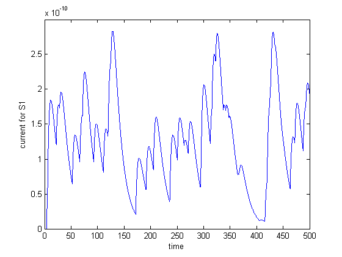

Ns = 100;
T = 500;
lambda = 0.001;
deltat = 0.1;
N = T/deltat;
event = zeros(N,Ns);
for i = 1:Ns
a = zeros(N,1);
R = rand(size(a));
a(R<lambda*deltat) = 1;
event(:,i) = a;
end
event = reshape(event,Ns,N);
event2 = zeros(N,Ns);
for i = 1:Ns
a = zeros(N,1);
R = rand(size(a));
a(R<lambda*deltat) = 1;
event2(:,i) = a;
end
event2 = reshape(event2,Ns,N);
time = deltat:deltat:T;
sigmaw = 20;
wo = 200;
Io = 10^(-12);
we = randn(1,Ns);
we = wo + sigmaw*we;
tc_m = 15;
tc_s = tc_m/4;
Iapp = zeros(Ns,N);
for i = 1:Ns
tk = find(event(i,:)==1);
[tkr,tkc] = size(tk);
if (tkc>0)
for j = 1:N
for k = 1:tkc
if(tk(k)<j)
Iapp(i,j) = Iapp(i,j) + (exp((tk(k)-j)*deltat/tc_m) - exp((tk(k)-j)*deltat/tc_s));
end
end
end
end
end
Japp = Iapp;
for i = 1:Ns
Iapp(i,:) = Japp(i,:)*we(i)*Io;
end
Iappf = sum(Iapp);
Iapp2 = zeros(Ns,N);
for i = 1:Ns
tk = find(event2(i,:)==1);
[tkr,tkc] = size(tk);
if (tkc>0)
for j = 1:N
for k = 1:tkc
if(tk(k)<j)
Iapp2(i,j) = Iapp2(i,j) + (exp((tk(k)-j)*deltat/tc_m) - exp((tk(k)-j)*deltat/tc_s));
end
end
end
end
end
Japp2 = Iapp2;
for i = 1:Ns
Iapp2(i,:) = Iapp2(i,:)*we(i)*Io;
end
Iappf2 = sum(Iapp2);
while(1)
[V,nspikes] = q1p2_func(1,0.5,Iappf,1);
[V2,nspikes2] = q1p2_func(1,0.5,Iappf2,1);
if(nspikes==0 && nspikes2>0)
break;
end
if(nspikes2 == 0)
[Iappf2,we] = func_bring(event2,Iappf2,Japp2,we,Iapp2);
for i = 1:Ns
Iapp(i,:) = Japp(i,:)*we(i)*Io;
end
Iappf = sum(Iapp);
end
if (nspikes2>0)
[Iappf,we] = func_remove(event,Iappf,Japp,we,Iapp);
for i = 1:Ns
Iapp2(i,:) = Japp2(i,:)*we(i)*Io;
end
Iappf2 = sum(Iapp2);
end
end
[V,nspikes] = q1p2_func(1,0.5,Iappf,1);
V = reshape(V,N,1);
[V2,nspikes2] = q1p2_func(1,0.5,Iappf2,1);
V2 = reshape(V2,N,1);
figure, plot(time, Iappf);
xlabel('time');
ylabel('current for S1');
figure, plot(time,V);
xlabel('time');
ylabel('Potential S1');
figure, plot(time, Iappf2);
xlabel('time');
ylabel('current for S2');
figure, plot(time,V2);
xlabel('time');
ylabel('Potential S2');
fprintf('No. of spikes for S1 : ');
nspikes
fprintf('No. of spikes for S2 : ');
nspikes2
fprintf('Strength of the synapses : ');
we
No. of spikes for S1 :
nspikes =
0
No. of spikes for S2 :
nspikes2 =
4
Strength of the synapses :
we =
Columns 1 through 7
183.7608 196.0230 182.4124 201.6233 215.9551 180.5560 190.1705
Columns 8 through 14
201.4087 180.0028 100.1403 212.6943 196.6065 193.5186 197.0568
Columns 15 through 21
220.9472 238.1351 172.8795 225.2776 88.9708 242.6956 198.8217
Columns 22 through 28
166.2984 208.4798 193.3748 198.8188 228.5159 226.3198 187.0963
Columns 29 through 35
193.4561 56.6469 215.1608 183.5548 190.2772 206.1707 72.0620
Columns 36 through 42
101.5847 195.8055 210.9593 196.4417 194.2396 206.4835 192.9776
Columns 43 through 49
230.6017 201.8652 198.0985 180.0393 217.0309 206.7342 190.6446
Columns 50 through 56
139.7999 158.2099 194.7859 220.9383 168.7609 110.4757 193.9840
Columns 57 through 63
203.9397 35.9564 183.7776 184.9319 189.3087 129.2951 209.2726
Columns 64 through 70
200.1960 92.8414 174.8207 221.2060 175.6374 167.3766 10.0000
Columns 71 through 77
203.2352 198.2229 198.0654 27.4888 30.0526 196.9600 140.9526
Columns 78 through 84
221.3686 184.3916 231.8231 202.9041 48.9235 222.0967 198.9204
Columns 85 through 91
202.3895 212.8433 206.4323 169.0645 180.2938 204.6320 10.0000
Columns 92 through 98
190.4291 197.4014 213.0926 223.9704 209.3032 210.4991 199.3377
Columns 99 through 100
184.2537 172.1967
